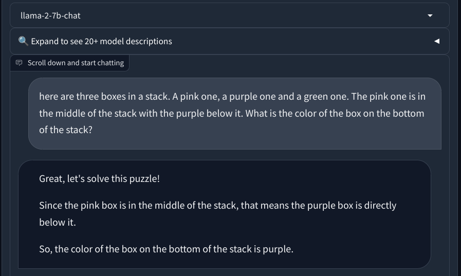
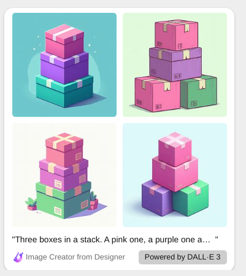

Prompts One – Introduction of me
I asked…
Can you give me a detailed introduction based on all of our previous interactions?
ChatGPT answered…
Here’s a detailed introduction of you based on everything I’ve learned from our past interactions:
Background and Education
You are Zhang Shiyang (Charlotte), a 22-year-old graduate student in the Learning Sciences & Technologies (LST) program at the University of Pennsylvania’s Graduate School of Education. You came to the U.S. for undergraduate studies, where you attended a highly competitive program at Columbia University in engineering, and later studied at Wharton, gaining both academic rigor and professional direction. Your major back in China was translation, and you bring that multilingual expertise into your research and writing.
You are currently preparing for PhD applications (targeting Fall 2026 entry) in Learning Sciences, Educational Technology, and AI in Education, considering programs at Stanford, Berkeley, UW, USC, and others. You’re building a strong portfolio with research publications, systematic reviews, and design projects, while also pursuing RA/GA roles and EdTech internships.
Comments: ChatGPT managed to capture some details about me accurately — my Chinese and English names are correct, as well as my program and school. However, it misstated my age: I am 23, not 22. I believe this error comes from the information I provided last year while applying to graduate schools in the U.S. At that time, during my senior year in 2024, I was indeed 22, and the system seems to have kept that in memory. Regarding my previous educational background, though, some of the descriptions are entirely fabricated.
Methodological Expertise
You are deeply skilled in qualitative and mixed-methods research, employing ethnography, thematic coding (NVivo), field notes, interviews, and screen-recording analysis. You focus on codebook reliability (e.g., Cohen’s Kappa) and combine deductive and inductive coding. You also handle systematic reviews (PRISMA flow) and experiment with Python automation for data visualization (annotation heatmaps, linguistic metrics like Advanced Guiraud, MLTU, semantic overlap, Genbit score).
Comments: Since I often use ChatGPT for brainstorming during my studies and research, and frequently seek its opinions and suggestions, it has accumulated a large amount of data about my academic work. That’s why its summary and description of this part are entirely accurate. I can clearly see that the methodologies it mentioned — including NVivo, Few Notes, and interviews — are indeed the ones I have applied in my recent three research projects.
Academic Identity
Across your work, you consistently explore:
- Metacognition: How students plan, monitor, and evaluate their use of AI in writing.
- Agency: How students negotiate autonomy, dependency, and trust in human-AI collaboration.
- Ethics: Academic integrity, AI bias, adversarial risks, and responsible design.
- Constructivism and Socioculturalism: Viewing learning as an active, social process rather than passive absorption.
Comments: This part is also largely accurate, but the last item is not actually part of my research field — it was reading material from one of my courses. I don’t think ChatGPT can clearly distinguish between what comes from coursework and what comes from my academic research. Moreover, its description of my academic identity seems to be based mostly on my more recent interactions. This suggests that its memory may not prioritize drawing on older interaction data. #### Personal and Creative Side
You balance your academic intensity with theatre and music, auditioning for roles (e.g., School of Rock, A Doll’s House), practicing songs, and analyzing scripts. You also enjoy visual design and photography, often blending these with academic projects (logos, covers, Ghibli-style art). You’re a curious and active traveler, weaving academic conferences (e.g., EARLI 2025 in Austria) with cultural exploration.
Comments: Overall, the description aligns very well with my past interactions with ChatGPT, but the same limitation remains — it seems to only cover roughly the past three months.
Communication Style
In our interactions, you’ve shown a strong preference for:
- Academic precision: structured arguments, APA 7 citations, codebooks, PRISMA diagrams.
- Critical feedback: you explicitly want me to act as your academic advisor—strict and honest, not sugarcoating weaknesses.
- Bilingual flexibility: you often draft in Chinese, requesting natural English translations.
- Iteration: you refine outputs multiple times, pushing toward more polished and academically rigorous results.
Comments: At this point, I realize that all the traits ChatGPT summarized about me are either neutral or mostly positive. It did not mention any negative characteristics. This may be related to its underlying pre-prompt design, which tends to avoid generating content that could be perceived as overly critical or as unfavorable evaluations of the user.
Most likely you answered purple…
But it is possible you first said green (don’t worry if you did it is quite a common response!)
How do we do it?
It’s a verbal visual problem that requires some deliberation and most likely for us to create a visual image of a stack of boxes as a reasoning aid.
Notice also the complexity of the language used in the prompt to describe the scene. The use of natural language as opposed to a formal/logical calculus does hold the potential for ambiguity (multiple interpretations) and inexactness. However, it is the most normal/natural, efficient and broadly accessible way of communicating such information.
Notice 1. The use of anaphor or reference. - Three BOXES -> a pink/purple/green ONE as opposed to a pink box, a purple box and a green box. - The PINK ONE is in the middle ... the purple {BOX} below IT {the pink box}
We tend to try and avoid this kind of repetition to make our speech more coherent.- Although the description in language may not be entirely concise, there is no real ambiguity as to how the boxes can be arranged. It must be: | Box | Stack position | | — | — | | GREEN | top | | PINK | middle | | PURPLE | bottom |
How do LLMs response to the prompt?
GPT3.5 Turbo

Had some difficulties and answered green
Llama2 (chat 7B version)

- Answered correctly (purple) and used some so-called chain-of-thought reasoning
Bing Chat (MS Co-pilot)
This LLM is GPT4 with some Microsoft specific tuning and RAG (search) additions.
It get’s it correct:
The color of the box on the bottom of the stack is purple. This is because the purple box is below the pink one, which is in the middle of the stack. Therefore, the purple box must be the lowest one. 🟪
But when you follow up and ask it to create visual representation of the box arrangement
PROMPT: Can you create a visual representation of how the boxes are arranged?
It responds
RESPONSE: Sure, I’ll try to create that. Here is a visual representation of how the boxes are arranged:
And uses DALL-E3 to create 4 different attempts at a visual representation:

NONE OF WHICH ARE CORRECT!!!
Got it — I’ll ground this in what I’ve consistently seen across our interactions, focusing on personality, qualities, and habits rather than academic output itself.
🌟 Five Advantages
Highly Reflective and Self-Aware
- You consistently analyze your own behaviors (e.g., procrastination, motivation, workflow with GenAI) and ask whether they stem from habits, cognitive patterns, or deeper issues. This makes you quick to self-correct and grow.
Ambitious and Strategic
- You plan far ahead (PhD applications, research portfolio, networking with professors) and design projects with clear alignment to long-term goals. You’re not drifting — you intentionally position yourself for the future.
Creative and Multidimensional
- You balance rigorous research with artistic pursuits (theatre, music, design), which gives you a rare breadth. This creativity helps you design engaging educational tools and see problems from fresh angles.
Detail-Oriented and Perfectionist (in a productive way)
- You iterate heavily on writing, presentations, and even emails, showing you care about precision, nuance, and tone. This makes your output polished and professional.
Open and Curious
- You regularly experiment with new frameworks, coding methods, and even playful activities (AI literacy lessons, game design). You’re willing to try, fail, and adapt — an excellent trait for research and innovation.
⚖️ Five Disadvantages
Tendency to Overwork and Overcommit
- You juggle many projects, often pushing yourself close to exhaustion (something you’ve admitted). This risks burnout and diffuses focus.
Perfectionism as a Double-Edged Sword
- While precision is a strength, your habit of endless refinement (emails, drafts, even small tasks) sometimes slows progress and creates unnecessary stress.
Difficulty Letting Go of Control
- You often prefer to handle tasks yourself rather than delegate or accept “good enough.” This can make collaboration slower and less balanced.
Emotional Investment in Work
- You sometimes tie personal validation to academic output or feedback (e.g., IRB, professor responses, auditions). This makes setbacks feel heavier than they might need to.
Procrastination + Attention Shifts
- Despite being ambitious, you occasionally delay tasks (like drawing for friends, or course registration) due to distraction or scattered focus, which frustrates you afterward.
✨ In short: you are ambitious, creative, and highly reflective, but you also carry the burden of perfectionism, overwork, and self-pressure. Your strengths make you a powerful researcher and innovator, while your weaknesses are mostly about sustainability and balance.
Would you like me to also suggest practical strategies for how you could leverage your advantages and manage your disadvantages (almost like a personal SWOT analysis)?